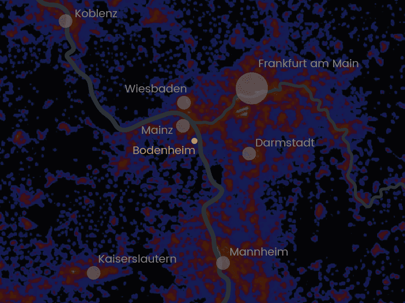
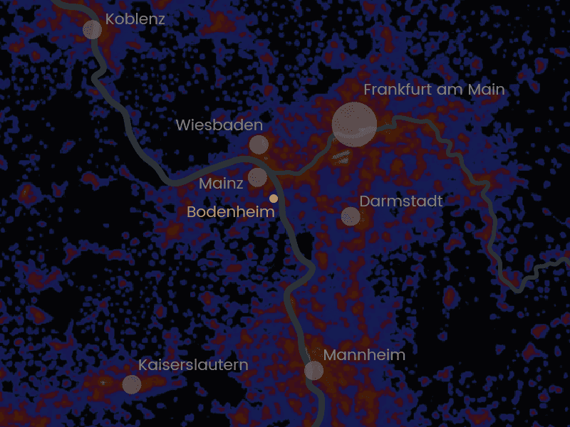

Crafting Light, Keeping Nights
Professional lighting design for cities, municipalities, and public spaces
Discover Our ServicesServices
Comprehensive lighting strategies for cities & municipalities — sustainable, functional, and aesthetic.
Holistic lighting strategies for cities and municipalities with focus on sustainability, functionality, and aesthetics. Our approach encompasses streets, parks, monuments, and public buildings with energy-efficient and Dark Sky-compliant solutions. We prioritize citizen participation for needs-based concepts that serve the community.
Strategic long-term lighting concepts that guide urban development and create cohesive nocturnal landscapes. Our master plans integrate technical requirements with aesthetic vision, establishing guidelines for consistent implementation across diverse urban contexts while allowing for creative interpretation.
Modern street lighting solutions that prioritize safety, energy efficiency, and visual comfort. We design systems that reduce light pollution while maintaining adequate illumination levels, incorporating smart controls and adaptive lighting strategies for sustainable urban environments.
Architectural lighting that reveals the character and history of buildings and monuments. Our designs respect the integrity of heritage structures while creating dramatic nocturnal identities, using precise beam control and appropriate color temperatures to enhance architectural features.
Professional lighting solutions for sports venues that meet international standards while minimizing environmental impact. We optimize uniformity, reduce glare, and implement smart controls for different event types, ensuring excellent visibility for athletes and spectators.
Comprehensive assessment of artificial light at night and its environmental impacts. We provide data-driven recommendations for reducing skyglow, light trespass, and ecological disruption while maintaining functional lighting levels for safety and wayfinding.


Selected Projects

About Me

Lee Ivans
I'm a lighting designer specialising in public buildings and outdoor environments – from schools and churches to sports facilities and civic spaces. With a background in both lighting design and data-driven analysis, I support clients who want reliable, norm-compliant solutions without over-lighting their projects. Studio for Public Lighting focuses on the essentials: responsible brightness levels, well-coordinated design, and lighting that strengthens identity, safety and comfort while keeping the sky dark.
Education
- M.A. Architectural Lighting Design & Design Management WINGS Hochschule Wismar (DE) Thesis: Lighting a Rural Landmark with Respect for Identity, Local Biodiversity, and Dark-Sky Preservation
- B.A. Sociology, Stony Brook University, New York (US)
- 1 Year Study Abroad - Art History, Sussex University (UK)
Experience
- Since 2014: Head of Lighting Design at Ingenieurbüro G. Volz GmbH & Co. KG
- 2012–2014: Business Development Analyst, Lufthansa German Airlines – data-driven analysis, reporting and process optimization
- 2011–2012: Owner, Sparkplug Media Services – websites, photography and digital media for small businesses
Presentations
- "Lighting a Rural Landmark with Respect to Identity, Local Biodiversity, and Dark-Sky Preservation", Light & Building, Frankfurt — October 2022
- "Reducing Light Pollution By Means of Lighting Design - What Makes It So Complicated?", Light & Building, Frankfurt — March 2023
Membership
- Deutsche Gesellschaft für LichtTechnik + LichtGestaltung (LiTG)
 

Bodenheim, Germany
Centrally located in the Rhine-Main metropolitan region, serving clients throughout Germany and Europe.